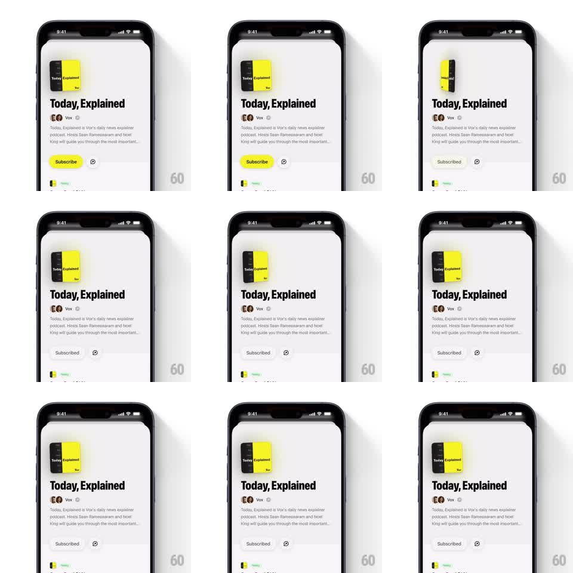

Media
Frame-by-frame

Rebuild this animation 1:1: Queue's subscribed artwork moment - the podcast cover flips in 3D with a light sheen sweeping its face, then idles with a subtle gyroscope parallax tilt.

Rebuild this animation 1:1: Queue's subscribed artwork moment - the podcast cover flips in 3D with a light sheen sweeping its face, then idles with a subtle gyroscope parallax tilt. ## Integration Integration: stack-agnostic spec - springs given as stiffness/damping, timed motions as duration + curve; map every value to your framework and animation library of choice. ## Scene Podcast page: square cover artwork above the title block. The artwork is the only moving element. ## Motion spec Pattern: 3D flip + sheen, then idle parallax, ~1.2s for the flip. - On subscribe, the artwork rotates 360deg around its vertical axis (900ms, ease-in-out), staying centered and at constant size. - A specular sheen band sweeps across the face as it turns (gradient highlight, ~30% alpha, moving opposite the rotation). - Edge-on frames (90/270deg) show the cover's true thin edge - the card has depth, it is not a flat sprite. - After the flip, the artwork rests with a live parallax: tilting the device rotates the cover a few degrees (max ~6deg each axis, spring ~120/14 smoothing) and the sheen drifts with the tilt. ## Calibration - Perspective ~1200px equivalent; the cover's corners must visibly foreshorten during the flip. - The sheen is a moving reflection, not a static gloss layer. ## Reduced motion Skip the flip and the parallax; crossfade to a subtle "Subscribed" badge state instead (200ms). ## Don't miss - The flip ends exactly on the front face - stopping a few degrees off reads as a bug. - Parallax recenters gently when the device is still; it never snaps back.